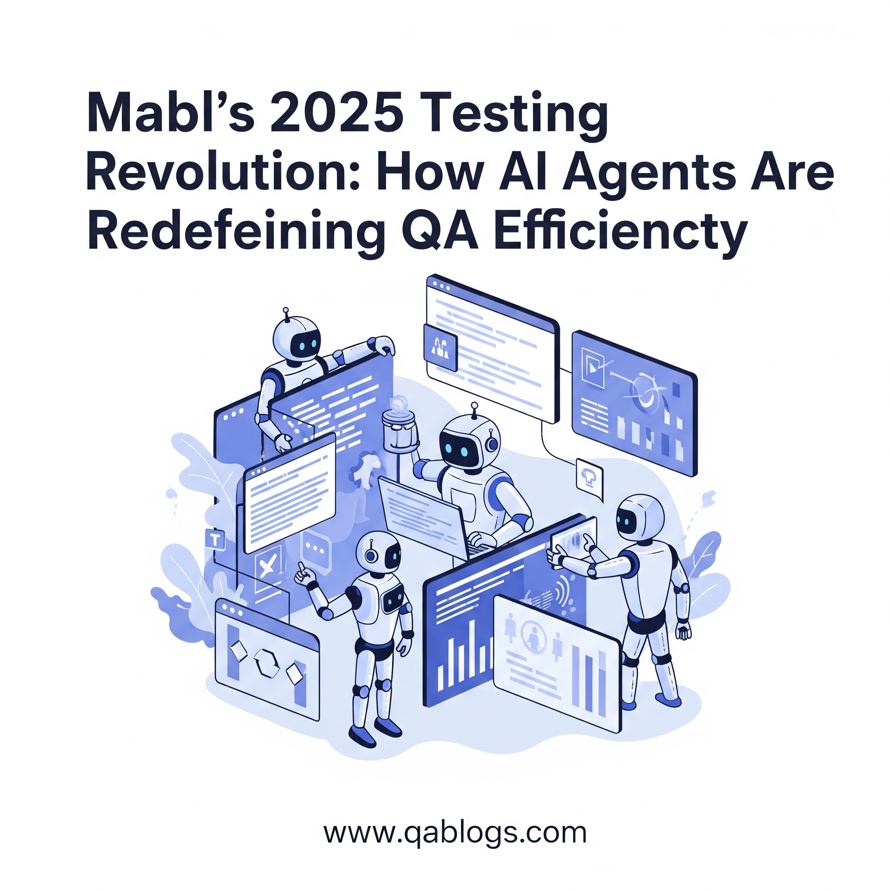

mabl’s 2025 Testing Revolution: How AI Agents Are Redefining QA Efficiency

Key Takeaways
- Mabl is revolutionizing QA in 2025 with AI agents that streamline test automation and enhance efficiency.
- Key features include self-healing tests, intelligent codeless test creation, predictive insights, and AI-assisted exploratory testing.
- Mabl's unified platform offers an end-to-end solution, distinguishing it from fragmented AI testing tools.
- Adopting mabl requires upskilling teams, integrating early in the SDLC, and balancing AI automation with human expertise.
- The future of QA involves testers becoming strategic orchestrators of quality, leveraging AI for innovation.
The world of software testing is undergoing a seismic shift. As we approach 2025, artificial intelligence (AI) is no longer just a buzzword—it’s a transformative force reshaping how quality assurance (QA) teams operate. Among the pioneers leading this revolution is mabl , a trailblazer in intelligent test automation. By leveraging AI agents to streamline and enhance QA processes, mabl is redefining what it means to achieve efficiency, scalability, and reliability in software testing.
In this blog post, we’ll explore how mabl’s AI-driven testing tools are revolutionizing QA efficiency, the key features driving this transformation, and what it means for testers, developers, and tech professionals navigating the AI-powered future of software testing.
Why AI-Powered Testing Matters in 2025
Software development cycles are shrinking, user expectations are skyrocketing, and the complexity of modern applications continues to grow. Traditional manual testing methods simply can’t keep pace with these demands. Enter AI-powered testing platforms like mabl, which use machine learning (ML), natural language processing (NLP), and predictive analytics to automate repetitive tasks, identify defects earlier, and optimize testing workflows.
By 2025, Gartner predicts that over 70% of enterprises will integrate AI into their testing strategies to improve efficiency and reduce costs. For QA teams, embracing AI isn’t just an option—it’s a necessity to stay competitive in an increasingly fast-paced tech landscape.
What Makes mabl Stand Out?
mabl stands at the forefront of this AI-driven testing revolution by offering a unified platform that combines test automation , self-healing tests , exploratory testing , and performance monitoring . Here’s how its AI agents are transforming QA:
1. Self-Healing Tests: Eliminating Maintenance Overhead
One of the biggest pain points in traditional automated testing is maintaining scripts when UI elements or APIs change. Mabl’s AI agents automatically detect and adapt to these changes, updating locators and assertions without human intervention. This self-healing capability reduces maintenance overhead by up to 60% , freeing QA engineers to focus on higher-value activities like exploratory testing and strategy planning.
Real-World Example : A fintech company using mabl reported a 40% reduction in test failures caused by UI updates, ensuring smoother releases and faster feedback loops.
2. Intelligent Test Creation: From Codeless to Confidence
Mabl empowers both technical and non-technical users to create robust test cases quickly. Its codeless interface allows testers to define scenarios using simple drag-and-drop actions, while its AI interprets these inputs to generate comprehensive test scripts.
For example:
- Input : “Verify login functionality with valid credentials.”
- Output : A complete test script covering multiple browsers, devices, and edge cases.
This democratization of testing ensures that even citizen testers—non-developers—can contribute effectively to QA efforts.
3. Predictive Insights: Anticipating Issues Before They Happen
Mabl’s AI doesn’t just execute tests—it analyzes historical data to predict where issues are likely to occur. By identifying high-risk areas, mabl enables teams to prioritize critical tests and allocate resources more efficiently.
Stat Alert : Companies using predictive analytics in testing report a 30% increase in defect detection pre-release , according to a recent industry survey.
4. Exploratory Testing Meets AI
Exploratory testing has long been a manual, intuition-driven process. Mabl bridges the gap between human creativity and AI precision by providing AI-assisted exploratory testing . Its agents simulate real-world user interactions, uncovering hidden defects that scripted tests might miss.
This hybrid approach ensures comprehensive coverage while reducing blind spots in testing.
How mabl Compares to Other AI-Driven Tools
While other AI-powered testing platforms like Testim , Functionize , and Applitools also offer advanced capabilities, mabl distinguishes itself through its end-to-end integration and focus on usability . Unlike fragmented solutions that require piecing together multiple tools, mabl provides a single platform that handles everything from test creation to reporting.
| Feature | mabl | Testim | Functionize | Applitools |
|---|---|---|---|---|
| Self-Healing Tests | Yes | Yes | Yes | N/A (Visual AI) |
| Codeless Interface | Yes | Yes | Yes | Limited |
| Predictive Analytics | Yes | No | Partial | No |
| Unified Platform | Yes | No | No | No (Visual Focus) |
This seamless experience makes mabl particularly appealing to teams looking to simplify their testing stack.
Practical Insights for QA Professionals
If you’re considering adopting mabl or another AI-driven testing tool, here are some actionable insights to maximize its impact:
- Upskill Your Team : Invest in training programs focused on AI-powered testing. Understanding how to prompt and refine AI outputs is crucial.
- Integrate Early in SDLC : Use mabl’s shift-left capabilities to catch defects sooner and reduce rework.
- Leverage Predictive Insights : Prioritize high-risk areas based on AI-generated risk assessments.
- Monitor Performance Metrics : Use mabl’s dashboards to track test coverage, execution times, and defect rates.
- Combine Human + AI Strengths : While AI excels at repetitive tasks, human intuition remains invaluable for exploratory and usability testing.
Challenges and Considerations
Despite its many advantages, integrating AI into QA workflows comes with challenges:
- Initial Learning Curve : Teams may need time to adapt to new tools and methodologies.
- Data Dependency : AI models require large datasets to function effectively, which may not always be available.
- Over-Reliance on Automation : Relying too heavily on AI could lead to gaps in subjective testing areas like UX and accessibility.
To mitigate these risks, organizations should adopt a balanced approach, combining AI’s strengths with human oversight.
The Future Outlook: Where Does QA Go From Here?
As we look toward 2025 and beyond, the role of QA professionals will continue to evolve. With tools like mabl, testers are transitioning from manual executors to strategic orchestrators of quality. AI agents handle the grunt work, enabling humans to focus on innovation, collaboration, and delivering exceptional user experiences.
Moreover, as industries embrace emerging technologies like quantum computing, blockchain, and AR/VR, QA teams must remain agile and adaptable. The ability to leverage AI-powered tools will be a defining factor in their success.
Conclusion
Mabl’s 2025 testing revolution exemplifies how AI agents are redefining QA efficiency. By automating repetitive tasks, predicting potential issues, and fostering collaboration across teams, mabl empowers QA professionals to deliver high-quality software faster and more reliably than ever before.
Are you ready to harness the power of AI in your testing strategy? Share your thoughts or questions in the comments below. Let’s discuss how mabl and similar tools can elevate your QA processes!
Join Our Community of QA Professionals
Get exclusive access to in-depth articles, testing strategies, and industry insights. Stay ahead of the curve with our expert-curated content delivered straight to your inbox.
Nikunj Mistri
Founder, QA Blogs
Related Articles
Zentester Unveiled: How AI is Redefining End-to-End Software Testing in 2025
Category: AI & Automation

Fellou AI: Revolutionizing QA with Agentic Browser Testing
Category: AI & Automation

Spur AI Agents: Revolutionizing Web Testing
Category: AI & Automation

Introducing Google Jules: What QA Engineers Need to Know
Category: AI & Automation
About the Author